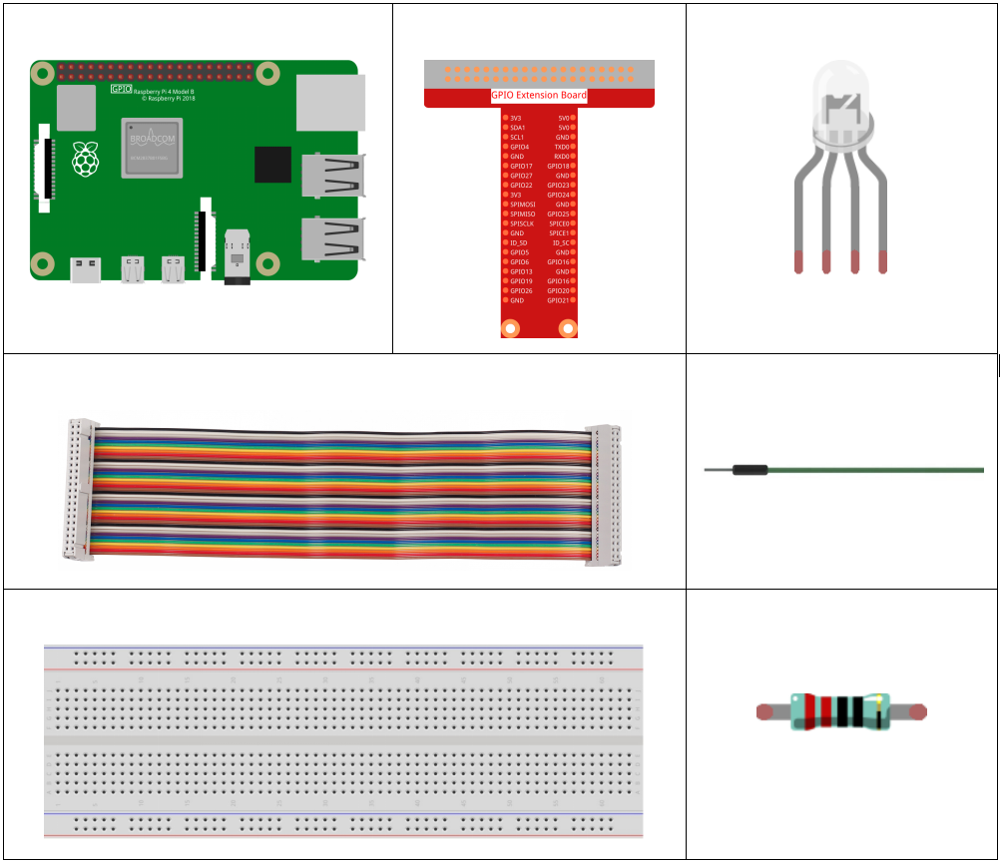

1.1.2 RGB LED¶
Introduction¶
In this lesson, we will use it to control an RGB LED to flash various kinds of colors.
Components¶
Principle¶
PWM
Pulse Width Modulation, or PWM, is a technique for getting analog results with digital means. Digital control is used to create a square wave, a signal switched between on and off. This on-off pattern can simulate voltages in between full on (5 Volts) and off (0 Volts) by changing the portion of the time the signal spends on versus the time that the signal spends off. The duration of “on time” is called pulse width. To get varying analog values, you change, or modulate, that width. If you repeat this on-off pattern fast enough with some device, an LED for example, the result would be like this: the signal is a steady voltage between 0 and 5v controlling the brightness of the LED.
Duty Cycle
A duty cycle is the percentage of one period in which a signal is active. A period is the time it takes for a signal to complete an on-and-off cycle. As a formula, a duty cycle may be expressed as:

Where D is the duty cycle, T is the time the signal is active, and P is the total period of the signal. Thus, a 60% duty cycle means the signal is on 60% of the time but off 40% of the time. The “on time” for a 60% duty cycle could be a fraction of a second, a day, or even a week, depending on the length of the period.

RGB LED

The three primary colors of the RGB LED can be mixed into various colors by brightness. The brightness of LED can be adjusted with PWM. Raspberry Pi has only one channel for hardware PWM output, but it needs three channels to control the RGB LED, which means it is difficult to control the RGB LED with the hardware PWM of Raspberry Pi. Fortunately, the softPwm library simulates PWM (softPwm) by programming. You only need to include the header file softPwm.h (for C language users), and then call the API it provides to easily control the RGB LED by multi-channel PWM output, so as to display all kinds of color.
Schematic Diagram¶
After connecting the pins of R, G, and B to a current limiting resistor, connect them to the GPIO17, GPIO18, and GPIO27 respectively. The longest pin (GND) of the LED connects to the GND of the Raspberry Pi. When the three pins are given different PWM values, the RGB LED will display different colors.
T-Board Name |
physical |
wiringPi |
BCM |
GPIO17 |
Pin 11 |
0 |
17 |
GPIO18 |
Pin 12 |
1 |
18 |
GPIO27 |
Pin 13 |
2 |
27 |

Experimental Procedures¶
Step 1: Build the circuit.

For C Language Users¶
Step 2: Go to the folder of the code.
cd /home/pi/davinci-kit-for-raspberry-pi/c/1.1.2/
Step 3: Compile the code.
gcc 1.1.2_rgbLed.c -lwiringPi
Note
When the instruction “gcc” is executed, if “-o ” is not called, then the executable file is named “a.out”.
Step 4: Run the executable file.
sudo ./a.out
After the code runs, you will see that RGB displays red, green, blue, yellow, pink, and cyan.
Code
#include <wiringPi.h>
#include <softPwm.h>
#include <stdio.h>
#define uchar unsigned char
#define LedPinRed 0
#define LedPinGreen 1
#define LedPinBlue 2
void ledInit(void){
softPwmCreate(LedPinRed, 0, 100);
softPwmCreate(LedPinGreen,0, 100);
softPwmCreate(LedPinBlue, 0, 100);
}
void ledColorSet(uchar r_val, uchar g_val, uchar b_val){
softPwmWrite(LedPinRed, r_val);
softPwmWrite(LedPinGreen, g_val);
softPwmWrite(LedPinBlue, b_val);
}
int main(void){
if(wiringPiSetup() == -1){ //when initialize wiring failed, printf messageto screen
printf("setup wiringPi failed !");
return 1;
}
ledInit();
while(1){
printf("Red\n");
ledColorSet(0xff,0x00,0x00); //red
delay(500);
printf("Green\n");
ledColorSet(0x00,0xff,0x00); //green
delay(500);
printf("Blue\n");
ledColorSet(0x00,0x00,0xff); //blue
delay(500);
printf("Yellow\n");
ledColorSet(0xff,0xff,0x00); //yellow
delay(500);
printf("Purple\n");
ledColorSet(0xff,0x00,0xff); //purple
delay(500);
printf("Cyan\n");
ledColorSet(0xc0,0xff,0x3e); //cyan
delay(500);
}
return 0;
}
Code Explanation
#include <softPwm.h>
Library used for realizing the pwm function of the software.
void ledInit(void){
softPwmCreate(LedPinRed, 0, 100);
softPwmCreate(LedPinGreen,0, 100);
softPwmCreate(LedPinBlue, 0, 100);
}
The function is to use software to create a PWM pin, set its period between 0x100us-100x100us.
The prototype of the function softPwmCreate(LedPinRed, 0, 100) is as follows:
int softPwmCreate(int pin,int initialValue,int pwmRange);
Parameter pin: Any GPIO pin of Raspberry Pi can be set as a PWM pin.
Parameter initialValue: The initial pulse width is that initialValue times100us.
Parameter pwmRange: the period of PWM is that pwmRange times100us.
void ledColorSet(uchar r_val, uchar g_val, uchar b_val){
softPwmWrite(LedPinRed, r_val);
softPwmWrite(LedPinGreen, g_val);
softPwmWrite(LedPinBlue, b_val);
}
This function is to set the colors of the LED. Using RGB, the formal parameter r_val represents the luminance of the red one, g_val of the green one, b_val of the blue one.
The prototype of the function softPwmWrite(LedPinBlue, b_val) is as follows：
void softPwmWrite (int pin, int value) ;
Parameter pin: Any GPIO pin of Raspberry Pi can be set as a PWM pin.
Parameter Value: The pulse width of PWM is value times 100us. Note that value can only be less than pwmRange defined previously, if it is larger than pwmRange, the value will be given a fixed value, pwmRange.
ledColorSet(0xff,0x00,0x00);
Call the function defined before. Write 0xff into LedPinRed and 0x00 into LedPinGreen and LedPinBlue. Only the Red LED lights up after running this code. If you want to light up LEDs in other colors, just modify the parameters.
For Python Language Users¶
Step 2: Open the code file.
cd /home/pi/davinci-kit-for-raspberry-pi/python
Step 3: Run.
sudo python3 1.1.2_rgbLed.py
After the code runs, you will see that RGB displays red, green, blue, yellow, pink, and cyan.
Code
import RPi.GPIO as GPIO
import time
# Set up a color table in Hexadecimal
COLOR = [0xFF0000, 0x00FF00, 0x0000FF, 0xFFFF00, 0xFF00FF, 0x00FFFF]
# Set pins' channels with dictionary
pins = {'Red':17, 'Green':18, 'Blue':27}
def setup():
global p_R, p_G, p_B
GPIO.setmode(GPIO.BCM)
# Set all LedPin's mode to output and initial level to High(3.3v)
for i in pins:
GPIO.setup(pins[i], GPIO.OUT, initial=GPIO.HIGH)
p_R = GPIO.PWM(pins['Red'], 2000)
p_G = GPIO.PWM(pins['Green'], 2000)
p_B = GPIO.PWM(pins['Blue'], 2000)
p_R.start(0)
p_G.start(0)
p_B.start(0)
# Define a MAP function for mapping values. Like from 0~255 to 0~100
def MAP(x, in_min, in_max, out_min, out_max):
return (x - in_min) * (out_max - out_min) / (in_max - in_min) + out_min
# Define a function to set up colors
def setColor(color):
# configures the three LEDs' luminance with the inputted color value.
R_val = (color & 0xFF0000) >> 16
G_val = (color & 0x00FF00) >> 8
B_val = (color & 0x0000FF) >> 0
# Map color value from 0~255 to 0~100
R_val = MAP(R_val, 0, 255, 0, 100)
G_val = MAP(G_val, 0, 255, 0, 100)
B_val = MAP(B_val, 0, 255, 0, 100)
# Change the colors
p_R.ChangeDutyCycle(R_val)
p_G.ChangeDutyCycle(G_val)
p_B.ChangeDutyCycle(B_val)
print ("color_msg: R_val = %s, G_val = %s, B_val = %s"%(R_val, G_val, B_val))
def main():
while True:
for color in COLOR:
setColor(color)# change the color of the RGB LED
time.sleep(0.5)
def destroy():
# Stop all pwm channel
p_R.stop()
p_G.stop()
p_B.stop()
# Turn off all LEDs
GPIO.output(pins, GPIO.HIGH)
# Release resource
GPIO.cleanup()
if __name__ == '__main__':
setup()
try:
main()
except KeyboardInterrupt:
destroy()
Code Explanation
p_R = GPIO.PWM(pins['Red'], 2000)
p_G = GPIO.PWM(pins['Green'], 2000)
p_B = GPIO.PWM(pins['Blue'], 2000)
p_R.start(0)
p_G.start(0)
p_B.start(0)
Call the GPIO.PWM( )function to define Red, Green and Blue as PWM pins and set the frequency of PWM pins to 2000Hz, then Use the Start() function to set the initial duty cycle to zero.
def MAP(x, in_min, in_max, out_min, out_max):
return (x - in_min) * (out_max - out_min) / (in_max - in_min) + out_min
Define a MAP function for mapping values. For instance, x=50, in_min=0, in_max=255, out_min=0, out_max=100. After the map function mapping, it returns (50-0) * (100-0)/(255-0) +0=19.6, meaning that 50 in 0-255 equals 19.6 in 0-100.
def setColor(color):
R_val = (color & 0xFF0000) >> 16
G_val = (color & 0x00FF00) >> 8
B_val = (color & 0x0000FF) >> 0
Configures the three LEDs’ luminance with the inputted color value, assign the first two values of the hexadecimal to R_val, the middle two assigned to G_val, the last two values to B_val. For instance, if color=0xFF00FF, R_val=（0xFF00FF & 0xFF0000）>> 16 = 0xFF, G_val = 0x00, B_val=0xFF.
R_val = MAP(R_val, 0, 255, 0, 100)
G_val = MAP(G_val, 0, 255, 0, 100)
B_val = MAP(B_val, 0, 255, 0, 100)
Use map function to map the R,G,B value among 0~255 into PWM duty cycle range 0-100.
p_R.ChangeDutyCycle(R_val)
p_G.ChangeDutyCycle(G_val)
p_B.ChangeDutyCycle(B_val)
Assign the mapped duty cycle value to the corresponding PWM channel to change the luminance.
for color in COLOR:
setColor(color)
time.sleep(0.5)
Assign every item in the COLOR list to the color respectively and change the color of the RGB LED via the setColor() function.
Phenomenon Picture¶